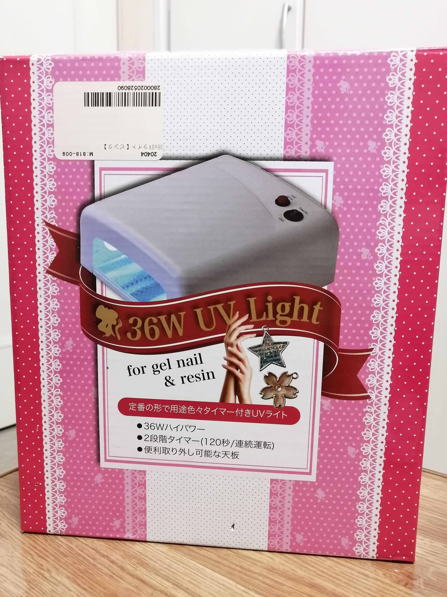
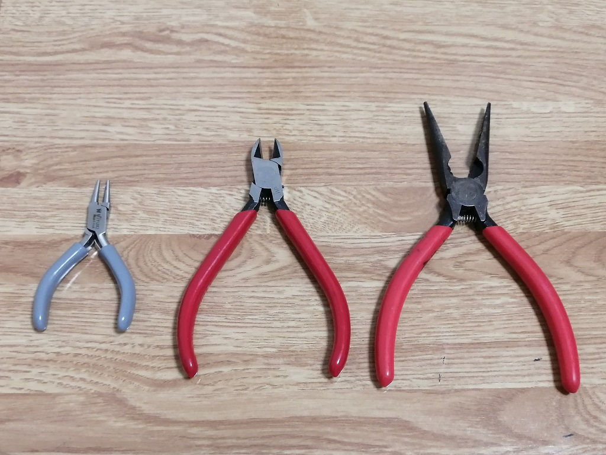
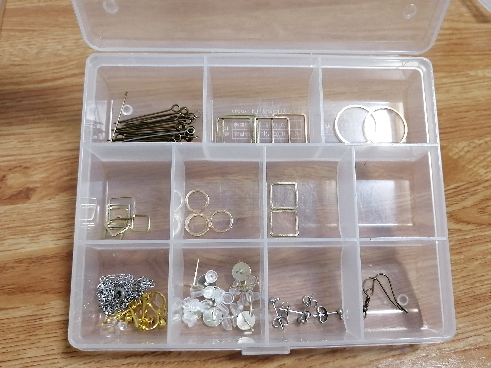
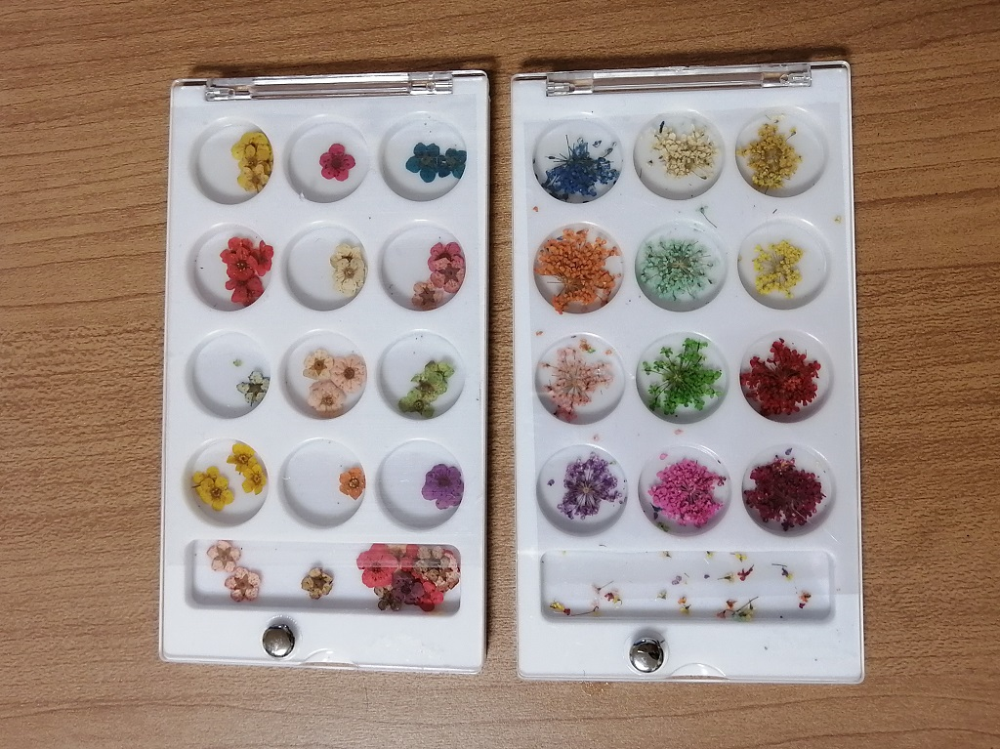
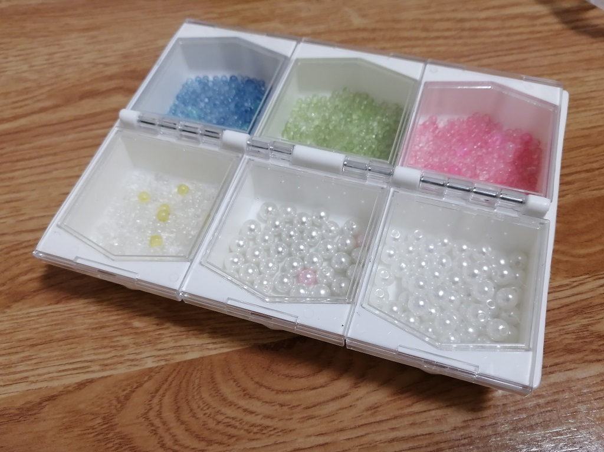
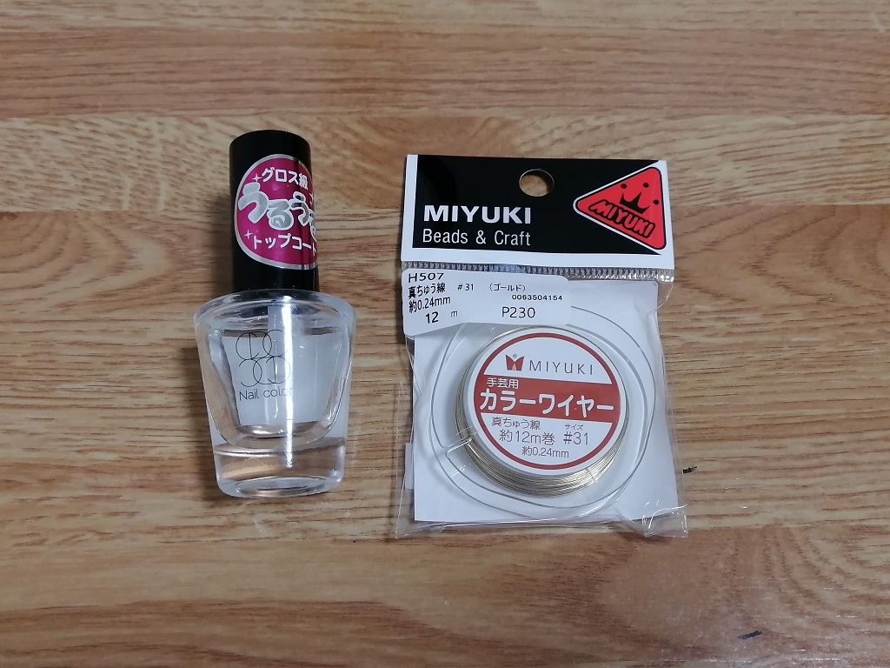
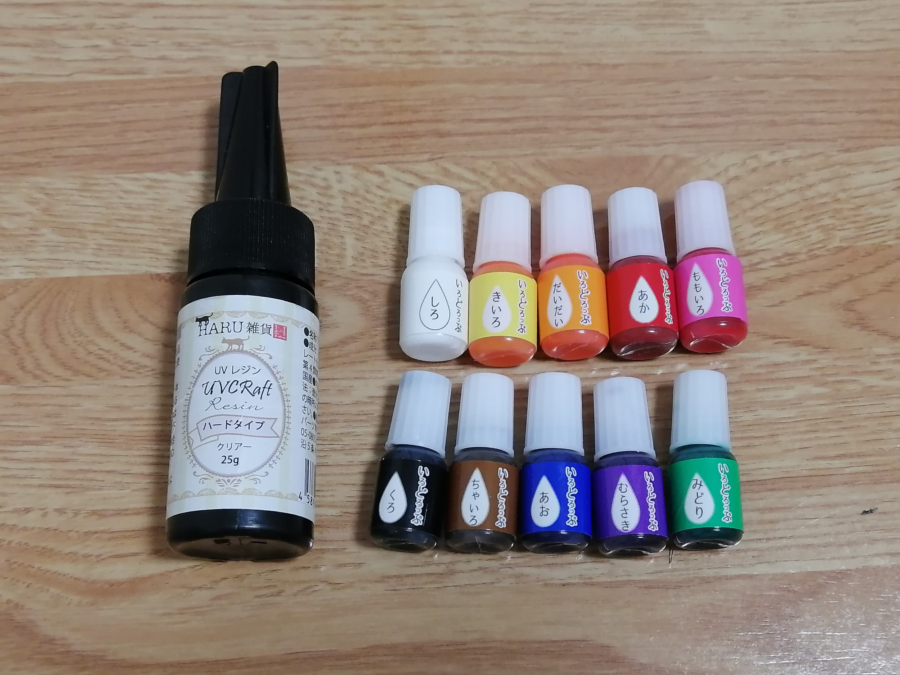

I mainly use UVresin to make accessories as a hobby.
UV resin solution is a resin that hardens when exposed to ultraviolet light or UV light.
I use a UV light machine like this one. ↓
Use a variety of tools and parts.
Many of the parts can be bought at 100 yen stores.
The earrings are decorated with dried flowers.
For dried flowers, I use pressed flowers in sizes of 2~3mm or 10mm and 3D dried flowers in sizes of 5mm.
Also it can be fashionable to attach beads to it.
Especially, White pearls can be elegant.
The 3D flowers are formed with wire.
The petals are made by applying a film of nail polish.
When the nail polish is dry, apply the colored resin solution and let it harden.
Finally, re-shape it into a beautiful flower.
The more I make it, the better I get at it and the more fun it is to come up with new ideas!